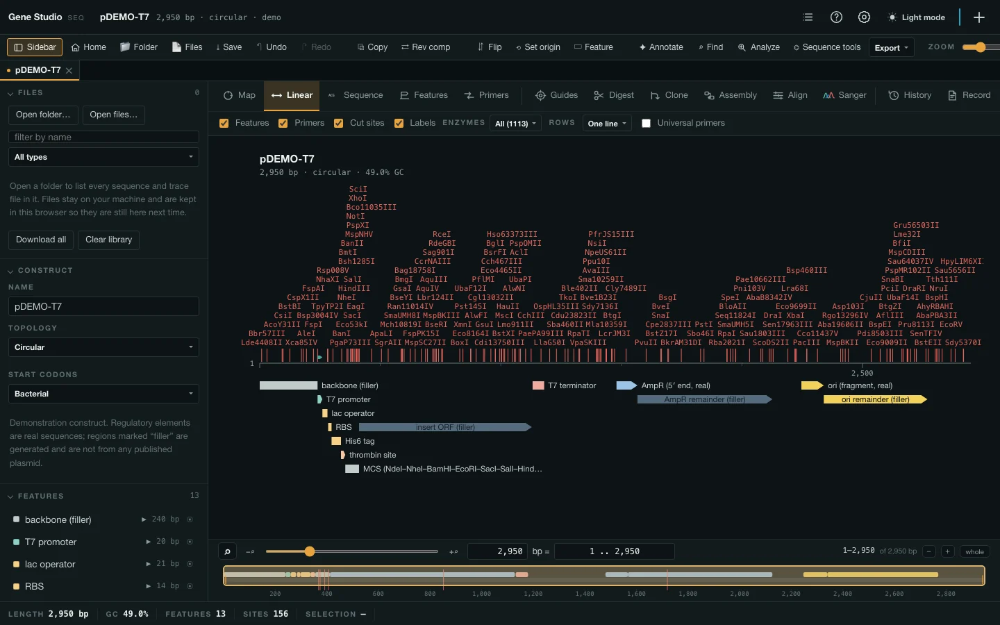

Private beta · macOS, Windows & Linux
Gene Studio
The plasmid you are holding, drawn
from the file you already have.
Maps, sequence, digests, cloning, guides and Sanger review — over the files you already have, written back without losing what was in them.
Current releaseLatest
Home searches favorite folders by filename or recognition sequence, locally and without an import step.
The overview moves through Home, Map, Features, Digest, Guides and Sanger in that order.
Every answer here was checked against
From the file on your disk
to the figure in the paper.
No import step, no project to create, no account. Find the file, read everything it carries, and take out exactly what you need.
-
Step 1
Find the file — or the site inside it
Filter every favorite folder by name, or switch to Recognition sequence and press Find. EcoRI, GATC or any exact IUPAC site is counted across the local library, file by file and strand by strand.
-
Step 2
Read the whole feature table
Open Full + computed and the record’s qualifiers sit beside %GC, residues, mass, pI, GRAVY, RBS, eggNOG and InterPro — with identity columns pinned while the table scrolls.
-
Step 3
Take the answer out as a figure
Fold the exact region you selected, or export a map, table or sequence. Vector labels stay editable in Illustrator; the source construct stays a document you can save back.
01Sequence
The sequence, with everything on it
Each stretch is one card: the enzymes above it, the primers that read 5′→3′, both strands, and each translation drawn directly under its own residues.
- A primer is drawn as it is — the 5′ overhang and any designed mismatch stepped down out of the shaft.
- A cut is a stepped mark through both strands, so which strand breaks where, and which way the overhang points, reads off the bases.
- Type to edit, with the features carried across the edit and one undo for a run of typing.
- Drag across the bases and the card follows with the three figures a drag is made for — how long, what it melts at, how GC-rich.
- Find reads IUPAC and regular expressions, and marks every hit on all three drawings.
02Digest
Mark a stretch, and it tells you which of your enzymes cut it
The question in front of a construct is not what does this digest give — it is which of the enzymes I have will open this piece. Select the stretch and the set you buy from is filtered to the enzymes with a complete recognition site inside it, each with where it cuts, the end it leaves and the pieces the stretch becomes. One press loads that digest onto the gel.
- Your set, not the catalogue — a company's list, or the one your lab saved.
- Suggest digests scores every combination for bands the agarose can actually resolve.
- Dam, Dcm, CpG, EcoKI and EcoBI — judged against the strain the DNA was grown in and the one it is going into.
- 2,672 published experiments from REBASE sit behind the verdict, not one word.
03Sanger
Sanger reads, against the construct they came from
Drop the .ab1 files from a run and each is trimmed, aligned and laid under the reference as a pileup, with its own chromatogram in the same columns. A real difference is told apart from a decayed tail rather than counted with it.
- Indels are aligned as indels — one deleted base is one event, not two hundred mismatches.
- What it does to the protein, on the spot:
Ala41Val · missense, or the frame it shifts and where that frame stops. - A .dna carrying aligned traces brings them in — SnapGene keeps them inside the file, and they are read.
.ab1 files in: 587 of 620 bases used, good over 7–593 at Q38, landing at 247–833 forward — and the difference it found marked on the read where the read is worth believing.04Design
Guides, arms and the oligos to order
A port of the lab's own R package: guide scoring, Golden Gate oligos, Gibson inverse-PCR primers and four-primer deletion arms — the thresholds and weights copied rather than reinvented, because they are tuned against real cloning outcomes.
- One gene or every CDS in a genome, each target contributing its own top-ranked guides.
- The editing vector is a real file, starred and kept, so moving or changing the source cannot change the design.
- The product opens as its own tab — original, the exact replacement, and the transformed vector, one under the other.
05Genomes
A genome is a construct too
The linear map zooms from a whole chromosome down to two genes with a ruler over them, and the sequence scrolls a 4.6 Mb record without pages. An assembly of 186 contigs is listed down the side and read by hopping between its pieces.
- Prodigal where it is installed, as real Prodigal — and never over a record that brought its own genes.
- eggNOG-mapper, InterProScan and DefenseFinder results drop straight onto the genes, column for column.
- Terminators, RBS and rare codons for every gene at once — the 3′ ends of a whole genome in under a second.

06Toolbox
And the rest of the toolbox
60 of them, and none is an add-on: they are all in the one file, on all three platforms, working on the construct you already have open. The figures below are this machine's own measurements.
Maps and the sequence 8
Primers, and the freezer they live in 8
Enzymes, digests and gels 8
Cloning and design 7
Sanger 6
Analyses 11
Files, and what leaves the machine 7
The application itself 5
07Files
It opens what your lab already has
And writes it back. Every claim here was checked against somebody else's reader — Biopython and snapgene_reader — over hundreds of this lab's own files, not against a fixture written by whoever wrote the test.
.gb .gbk .gbff
The record above FEATURES is kept whole — accession, organism, lineage, the papers, the structured comments — and written back as it arrived. Saving twice gives a byte-identical file.
.dna
SnapGene files are read and written packet for packet: the colours, the edit history, the aligned traces and every packet this reader does not interpret ride through untouched.
.fa .fasta .fna
A file carrying 85,142 records is listed and read a record at a time, in milliseconds — because splitting is cheap and parsing everything is not.
.ab1
Read as a read of the construct, not as a document of its own: end-trimmed by quality, aligned both ways round, and kept with the plasmid it was read against.
out
GenBank — and a separate sharing copy that says what it left behind — SnapGene .dna, FASTA, an .xlsx workbook, and every drawing as vector.
on your machine
Your files are read from disk and stay there. Nothing is uploaded, and the only outbound requests are the ones you press — BLAST, InterProScan, eggNOG — each named before it is made.
08Compare
Next to what people already use
Every cell below comes from that product's own public page, on the date in the note under the table. This is not a claim that the others are worse — they are older, broader and in several ways better resourced. It is a claim about where the work happens.
| Gene Studio | SnapGene | Benchling | ApE | |
|---|---|---|---|---|
| Where it runs | macOS · Windows · Linux | Windows · macOS · Ubuntu | in a browser | macOS · Windows · Linux |
| Works with no network | the licence is checked on your own machine | activation and licence checks need it — snapgene.com daily; a network licence lapses after 10 days offline | “You must be online to access and save data” | only the NCBI tools need one |
| Where your files live | on your machine | on your machine | in Benchling’s cloud | on your machine |
| Opens SnapGene .dna | its own format | not stated | ||
| Reads and writes GenBank | ||||
| Sanger .ab1 against the construct | ||||
| Restriction digest with a simulated gel | ||||
| CRISPR guide design | its own guide sends you to E-CRISP and Cas-OFFinder | not stated | ||
| Gibson and Golden Gate design | ||||
| Primer design | ||||
| One academic seat | free during the beta | $350 a year · $149 student · $3,000 permanent | free academic plan — Notebook and Molecular Biology; Inventory and Registry are not in it | free, donations invited |
Every cell that is not ours was read on 15 August 2026 from that product's own pages — snapgene.com/features, /pricing, their CRISPR guide and support centre; Benchling's help centre and academic page; the ApE manual. No review, no third-party summary, and no vendor's comparison of a rival. Where a product's own pages do not say, the cell says not stated rather than no — a cross is a claim and needs a source as much as a tick does. Prices and platforms change; if a cell here is out of date or wrong, write and it gets fixed.
Not a feature list.
A list of things that were measured.
Every figure below came off this machine, on real files, against somebody else’s reader wherever one exists.
400 / 400 real GenBank files opened, written back and read again with every header field intact — accession, version, keywords, definition, source, organism, lineage, DBLINK, every reference and every structured block.
tests/genbank-roundtrip.mjs
A 13 kb GenBank with 115 features and 79 primers opens in 67 ms. It used to be 4,750.
measured end to end, map on screen
60 of 60 of this lab’s own Sanger traces parsed, trimmed, packed and aligned with nothing wrong. At each called base the channel of the base that was called is the tallest of the four: worst 93.0 %, median 98.6 %.
tests/real-traces.mjs
A construct carrying every extra goes out at 1,766 bytes full and 1,215 shared, and Biopython reads both with no warnings at all.
the sharing copy
2,672 published experiments over 435 enzymes sit behind a methylation verdict — REBASE’s own records, in REBASE’s own colours, not one summary word.
rebase.neb.com/msget
Three files written here were opened in SnapGene 8.2.2 itself: a gene crossing the origin drawn as an arc over the join, spliced features drawn with their gap, every colour as written, a linear construct opening linear.
the one check the Python readers cannot stand in for
1,113 enzymes from REBASE v607 — every enzyme NEB sells, two-sided cutters and homing endonucleases included, each cut position checked against a second REBASE file.
671 of 673 agreed; the two that did not were fixed
A 4.2 Mb genome with 8,338 features opens in 1.2 s with its map drawn. It was 4.0 s, and the restriction scan is no longer in front of the first paint.
E. coli K-12 MG1655
60 of 60 cells identical to DNMB’s own R — the same InterProScan TSV through
checked against the package, not against ourselvesreshape2’s melt and cast, and through ours, name for name over a real genome.
Attaching a 5,436-tube freezer to a 4.09 Mb genome and saving: GenBank,
proved by planting the leak.dnaand the session all byte for byte identical attached and detached. A tube is borrowed, never owned.
Every text node of all twelve views, in both themes, against its composited background: 0 contrast failures where it had been 19.
19,316 nodes a pass
4,000 restriction sites verified against their own enzyme’s pattern at the position and strand they claim, and three digests summing to the molecule exactly.
a seed each
A .deb installed in Debian under Xvfb and driven by the same smoke every other platform gets: 4,000 bp, 8,808 sites, five views drawn, 5,508 bytes of GenBank out — through the licence gate.
a Mac cannot open a Linux window, but it can run a Linux machine
A misnamed
tests/linux-package.mjsreal.gbsaved as.txtstill resolves to chemical/x-genbank and opens the app — by its bytes, on a stock Debian where*.gbis otherwise a Game Boy ROM.
Updated end to end twice, on this machine: 121 MB in about 14 s, installed in place,
one press/Applicationscoming back as the new version, still signed and notarized.
21 harnesses run on every release, and the biggest script in the project is checked by
npm testnode --check— a syntax error in it arrives as every test failing with “S is not defined”.
These are a sample. Each is a harness in the repository that runs on every release — the reasoning behind all of them is in the manual.
09Questions
Frequently asked
What it costs, what it sends, what it does to your files, and which machine it runs on.
Does it work offline?
Yes, and so does the licence check — it is verified on your own machine against a key built into the app, with nothing to ask and no server to be down. The only requests this app makes are the ones you press: a BLAST, an InterProScan or eggNOG submission, and the once-a-launch look for a newer build, which can be switched off.
Is it open source?
No. It is free to use for research and is given to named people; copying, changing or passing it on needs written permission. Third-party components — SeqFold, MAFFT, Electron, the REBASE data and the rest — keep their own terms, and every one of them is named in the app.
Will it break my SnapGene files?
Opening one changes nothing on disk. Saving one writes it back packet for packet, including every packet this reader does not interpret — and the result is opened by snapgene_reader and by Biopython's SnapGeneIO with no warnings at all, which is checked over dozens of this lab's own files. Files written here have also been opened in SnapGene 8 itself.
Which Mac, which Windows, which Linux?
The Mac build is Apple silicon and signed with a Developer ID. The Windows build is a 64-bit installer, with a portable build beside it. Linux is an AppImage and a .deb, both for x86-64 and arm64 — and the two are updated differently on purpose: the AppImage installs its own update in one press like the other platforms, while a .deb belongs to your package manager and the app says so rather than offering a button it cannot finish. Everywhere else, updates arrive in the app: one press downloads and installs the newest version, and the button names the version it is about to install.
What about a genome, not a plasmid?
A 4.2 Mb chromosome with 8,338 features opens in about a second with its map drawn. The restriction scan is the one thing that still costs on a record that size, so past a few hundred kilobases it is scheduled just after the first paint instead of in front of it.
How much will it cost after the beta?
Nothing is charged during the beta, and not retrospectively for it either. The intention is half of what SnapGene charges for the equivalent seat; the table is in the app under Settings → About.
10Beta
Getting in during the beta
Gene Studio is free to use and is not open source: it is given to named people for research. A licence is written for one computer and it takes a minute.
- Download and open it. The first window shows a Machine ID — twelve characters that identify the computer to nobody but the licence.
- Press Ask for a licence. It writes the mail for you, with your name, institution and that id already in it.
- Paste the licence that comes back into the same window. It is verified on your machine — nothing is sent anywhere, so it works on a plane.
Current releaseLatest
Download for MacApple silicon Download for Windows64-bit Download for LinuxAppImageBug reports are welcome at the same address — the app writes one for you, with the version, the platform and what it was doing, under the ? in the toolbar.
Write, and a person answers.
Something not working?
A crash, a file it would not open, a reading you think is wrong. Send the report the app writes for you — it carries the version, the platform and what it was doing — and the file if you can share it.
Report a problemA licence for your lab
A seat is written for one computer and takes a minute. Say who you are and where you work; if a whole group needs them, say how many and they come back together.
Ask for a licence